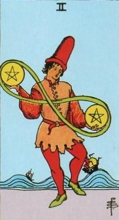
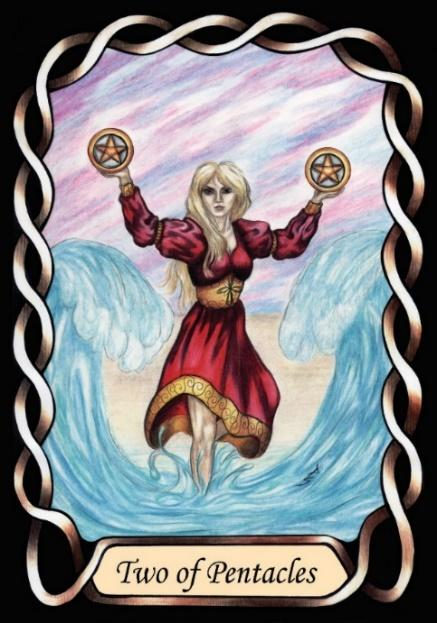

Two of Pentacles


Sign |
|
Ten: career, success |
|
Sign Ruler |
|
Element |
Earth: practical |
Modality |
|
Symbol |
Ram |
Decan |
|
Decan Ruler |
|
Time |
Dec 22 to 31 |
Details Capricorn I
An Apprentice in the field of career, is ruled by both Saturn and Jupiter. He learns and rises quickly, but may make mistakes in these early days as he gathers the knowledge he needs. A hunger for rapid results can lead to gullibility and mistakes, all of which serves to educate him. His saturnian nature will make him attempt to dominate. These are typically entrepreneurs in the early stages of their career. They may fail several times before they are successful. Also, being an Apprentice, they typically have a number of projects on the go, hoping one of them will succeed. A consequence is that they are often juggling finances, taking money from one project to meet a payment deadline on another, writing cheques that cannot be cashed for a few days until the money to support them comes through, living on good will and extensions. Because they are not yet fully trained, their collection of small ventures becomes a House of cards that can collapse if even one payment is not met. The available leveraging techniques in stock market trading are particularly strong traps for young players. Denizens of this decan tend to obsess over details, rather than seeing the big picture.
Goldschneider Personology
These Capricorns automatically assume their right to rule those around them, making decisions on behalf of others. They want order and discipline, and will not tolerate chaos from members of their empire. They can tend to become control freaks, and to arouse resentment in those who do not like to be ordered around.
RWS Imagery
An Apprentice wishes to become wealthy and be the ruler of his business empire, but is still learning the rules, and often must resort to juggling his finances.
Pymander Imagery
The Apprentice is a youth. The juggling of money is more specific than the RWS card. The stock market display indicates the financial skills that he is learning.
Summary
Represents early career struggles, financial juggling, and entrepreneurial spirit.